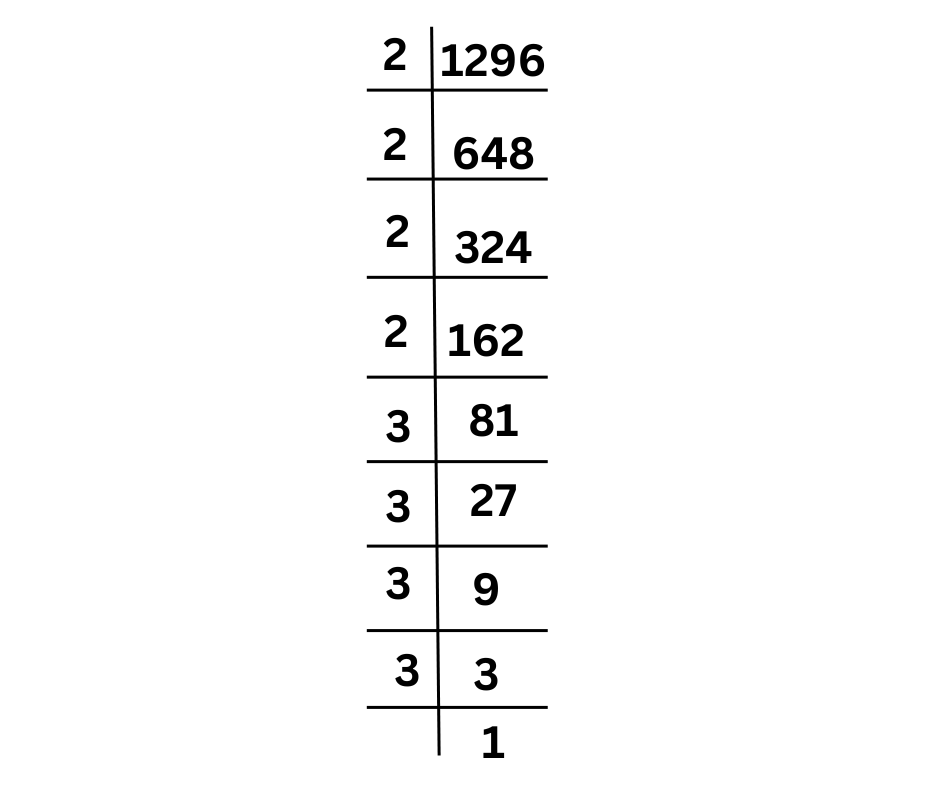

Prime Factorization
Prime factorization is the process of expressing a number as a product of its prime factors. A prime number is a number greater than 1 that has no divisors other than 1 and itself (e.g., 2, 3, 5, 7, 11, etc.).
Steps to Find the Square Root Using Prime Factorization
Let’s find the square root of 36 using the prime factorization method.
Step1: Factor the Number into Prime Factors
- Start by dividing the number (36) by the smallest prime number (2) and continue dividing until you reach 1.
36 ÷ 2 = 18
18 ÷ 2 = 9
9 ÷ 3 = 3
3 ÷ 3 = 1
So, the prime factorization of 36 is:
- 36 = 2 × 2 × 3 × 3 or written in exponential form, 36 = 2² × 3².
Step 2:Pair the Prime Factors
- To find the square root, we look for pairs of the same prime factor.
From 2² × 3², we have: - One pair of 2s (2, 2)
- One pair of 3s (3, 3)
36 = 2 × 2 × 3 × 3
36 = 22 . 32
Step 3:Take One Factor from Each Pair
- For each pair, take one of the prime factors to find the square root.
So, we take:
- One 2 from the pair of 2s.
- One 3 from the pair of 3s.
Step 4: Multiply the Factors
- Now, multiply the factors you took from each pair together:
√36 = 2 × 3 = 6
Conclusion
So, the square root of 36 is 6.
Example 2:
Find the square root of 1296 using prime factorisation method:
First find factors of 1296

1296 = 2 × 2 × 2 × 2 × 3 × 3 × 3 × 3
1296 = 24 × 34
Summary of Steps:
- Factor the number into its prime factors.
- Pair the prime factors.
- Take one factor from each pair.
- Multiply these factors to find the square root.